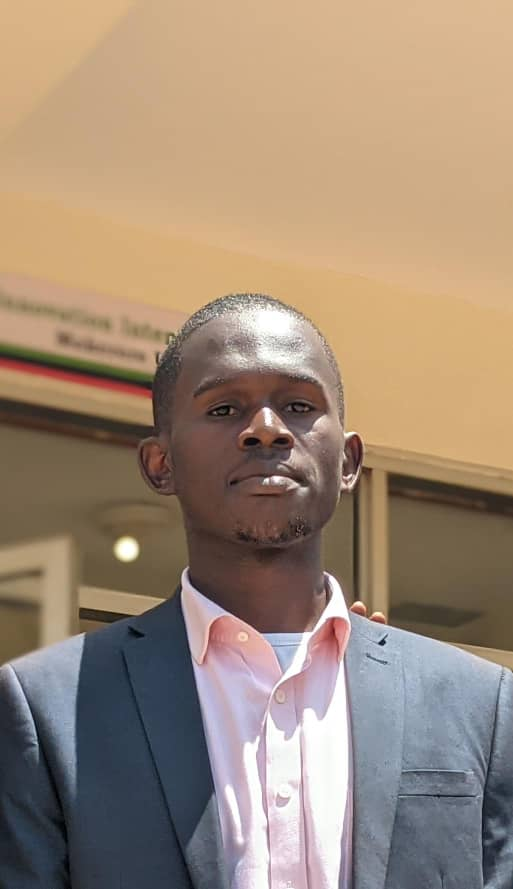

Tenywa Sosan
Library & Record Keeper
Dedicated library professional with expertise in records management, digital archiving, and information organization. Passionate about implementing modern cataloging systems and maintaining archive integrity.
Education Journey
Makerere University
Library and Information Science
CurrentSt Gonzaga Budini Secondary School
Secondary Education
CompletedKiribaki Secondary School
Secondary Education
CompletedKiringa Primary School
Primary Education
CompletedWork Experience
New Vision Resource Center
Intern | June 2023 - August 2023
- Classification, stamping, and distribution of newspapers and relevant records
- Scanning and digitization of physical records for improved access
- Handling printing, photocopying, and email correspondence
- Expertise in records lifecycle management
Aga Khan High School
Library Assistant
- Managed and organized library resources
- Implemented digital cataloging systems
- Provided research assistance to students and faculty
Career Prospects
Knowledge Manager
Design and manage information systems for optimal knowledge organization
Data Analyst
Leverage data analysis skills to drive informed decisions
Digital Asset Manager
Oversee digital assets in modern library systems
Information Specialist
Design and maintain sophisticated information systems
Hobbies & Interests
Reading
Exploring various genres and maintaining a book club
Touring
Discovering new places and cultures
Camping
Outdoor adventures and nature exploration
Sports
Active participation in team sports